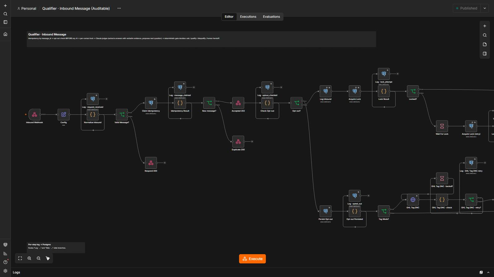
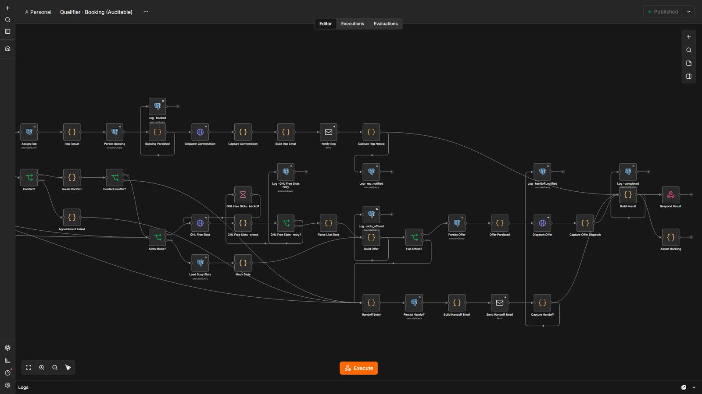
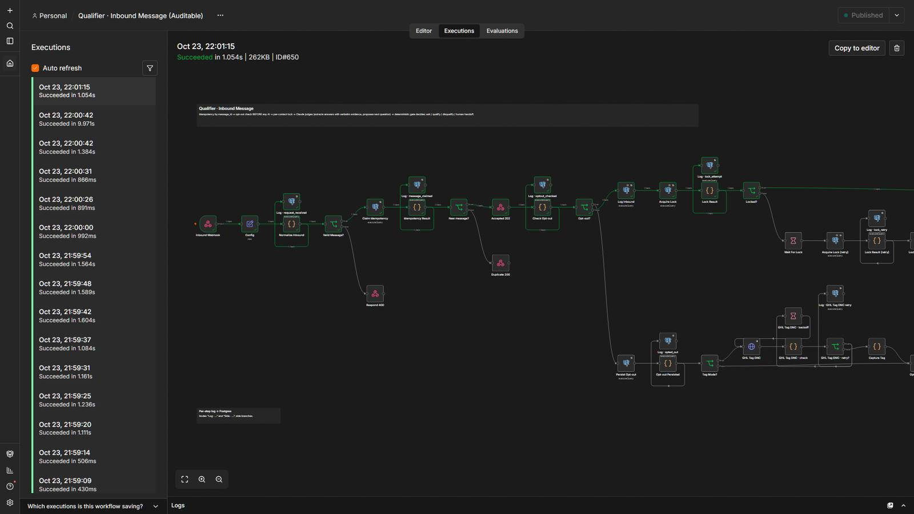

Qualify and book leads by text, even at 2 a.m.
A conversation takes a lead from “replied” to “appointment booked” and escalates to a person only when needed. Opt-outs are handled by code before any AI sees the message.
5 steps, and who decides each one.
- Code decides
Opt-out first
STOP-style words are caught by a rule, with no AI involved.
- AI reads
Decide the next step
AI reads the reply as untrusted data and proposes ask, qualify, disqualify or hand off.
- Code decides
Validate & gate
No links or prices, length limits, and low confidence goes to a person.
- Code decides
Book a real slot
Offers free calendar slots, maps the reply to one of them and creates the appointment.
- A person
Hand off
A person receives the conversation with a draft when the bot should not continue.
4 workflows
Qualifier · Inbound Message
Handles each incoming SMS: opt-out, per-contact lock, AI decision, validated reply.
Step by step
- Normalizes the message; opt-out is checked before AI.
- Takes a per-contact lock so two messages from the same lead do not collide.
- AI (mock) decides the next step; code validates the outbound text and decides the action.
- Queues the reply; hands off to a person by email when qualified.
Qualifier · Booking
Offers free slots, understands the lead's choice and books the appointment.
Step by step
- Reads free slots (mock calendar), offers up to three.
- AI picks which slot the lead chose; code validates it.
- Books atomically: a unique index decides races for the same slot.
- Sends the confirmation.
Qualifier · Send Message
Sends one message from the outbox, re-checking everything at send time.
Step by step
- Re-reads the opt-out list and the conversation state.
- Only sends within working hours in the lead's local time.
- Persists outbox, conversation log and state in one statement.
Qualifier · Stale & Queue
Every 15 minutes releases held messages and follows up on conversations that went quiet.
Step by step
- Releases messages whose sending window opened.
- Creates one follow-up for stale conversations, then stops.
The system in n8n.
Screenshots of the actual editor and of a real execution, from the local test environment. Click one to open it full size.





